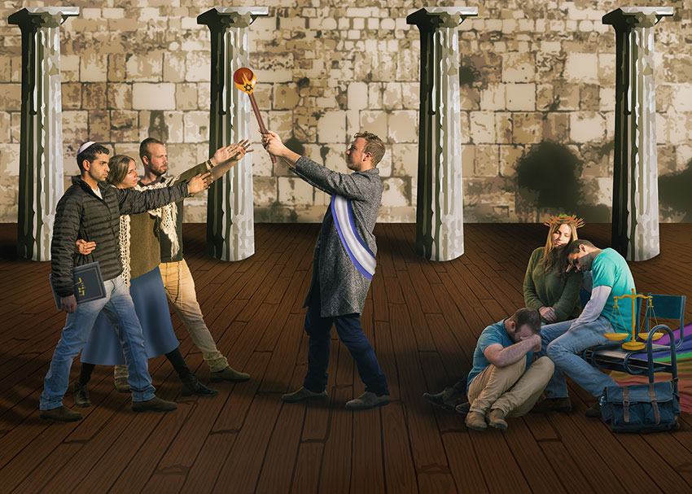

במסגרת פרויקט הסיום של הקורס, בקבוצה של 3, יצרנו יצירה חדשה בהשראת יצירה ישנה. התבססנו על היצירה "שבועת ההוראטים" של ז'אן לואי-דויד מ-1784. היצירה שלנו עוסקת בנושא יחסי הכוחות בין הצד היהודי דתי של מדינת ישראל לבין זה הדמוקרטי-ליברלי.
היצירה
סרטון המסביר על היצירה
הסבר על היצירה
היצירה המקורית מייצרת רגשות שליליים כיוון שהיא מייצגת תרבות המאדירה מלחמה ומפלה נשים, תרבות שנוגדת את ערך חיי האדם ומעודדת הקרבה. הסיפור מאדיר את החשיבות שהיצירה מעניקה לפטריוטיות ולמדינה על פני השיקולים האישיים והמשפחה, בסוף הסיפור האח היחיד שניצל הורג את אחותו כיוון שבוכה על ארוסה שנהרג בקרב והשתייך לאויבים. אנחנו יכולים לזהות את הרגשות הללו כיוון שגם היום אנשים מוכנים להקריב את עצמם למען המדינה.
משבר הזהות בו מצויות הנשים, נתן לנו את ההשראה לחפש קונפליקט דומה בחייו. בחרנו להתמקד במאבק הכוחות בין הצד הדמוקרטי בישראל לצד הדתי-יהודי.
ביצירתנו, הדמות המרכזית מייצגת את מדינת ישראל אשר מעניקה את שרביט הכוח לממסד הדתי, אותו מייצגות הדמויות משמאל. כמו בציור המקורי, הדמות המרכזית, שהיא מדינת ישראל, מסיתה את בניה ונותנת להם את הכח והלגיטימציה למלחמה.
בצד הימני, מיוצג הפן הדמוקרטי של המדינה על ידי דמויות בוכות המבינות שהן יפסידו, בלי קשר לתוצאות ה"מלחמה".
בחרנו לייצג את שני הצדדים על ידי אותם אנשים, כשההבדל הוא בחזותם ובסמלים המייצגים אותם. הסיבה לכך היא שלא מדובר במלחמה בין שני כוחות זרים, אלא במאבק בין שתי זהויות של אותה המדינה.